Navigate to Projects > All Project, create on New Project.
Select Local File --> Drag and drop your project .zip file in to the "Browse"
Enter a project name --> Create
Note: the project name please follow the format [your name]_hk_techexchange_project

Go to your new project
After successfully import project. You should see many assets that we are going to use for data ingestion.
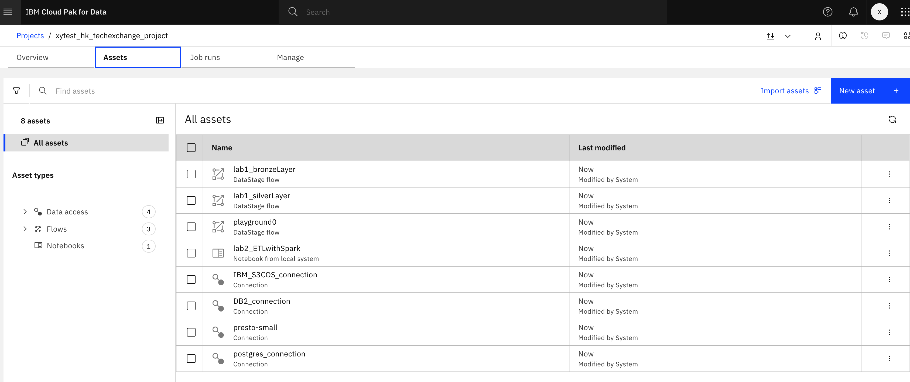
Check 4 connections one by one, starting with "IBM_S3COS_connection" by clicking it
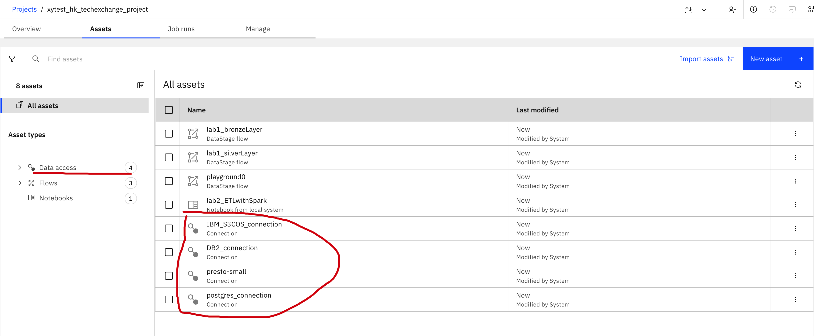
Click "Test connection"-->Waiting for the Sucessful info --> Click Cancel
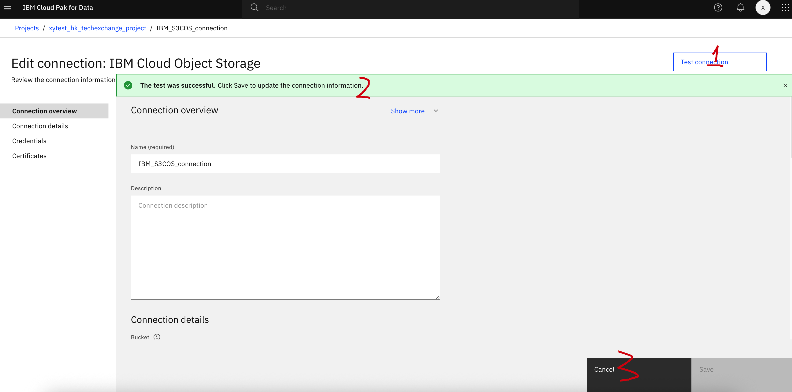
Do the same for the rest 3 connections
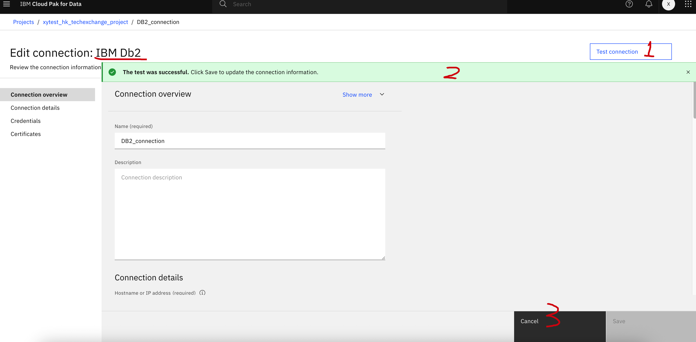
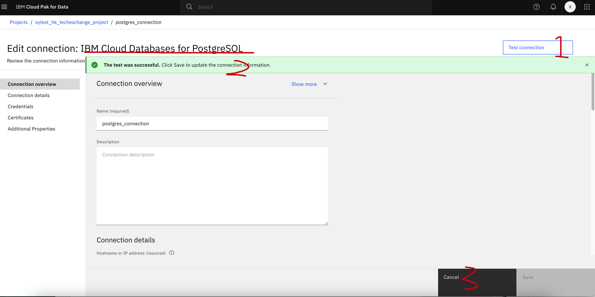
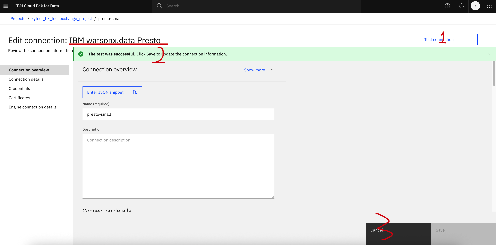
The project import with several DataStage flows. Now let's start with the bronze layer data ingestion, clicking the "lab1_bronzeLayer" flow 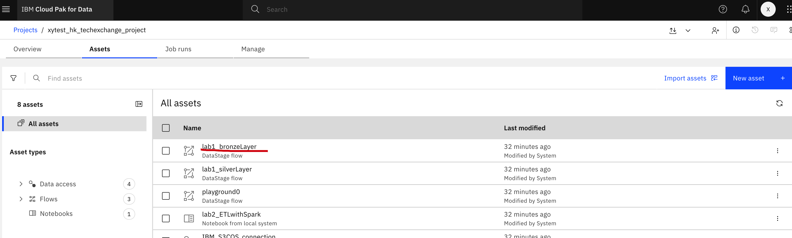
This step will read from 3 tables from the source to the watsonx.data Iceberg table:
For 3 sources, you do not have to change anything, keep it as it is.
For 3 targets, double click them one by one, starting with customer_bronze.
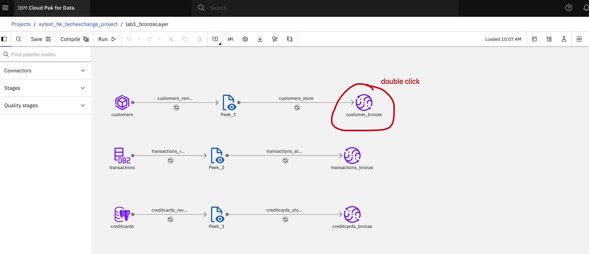
Modify the catalog, shcema and table
Catalog: should be "hk_aug_catalog0", change to this if it is not
Shchema: should be "hk_aug_schema0", change to this if it is not
!!Table: Change to [yourName]_customers_bronze
Click Save
Do the same for the rest two: transactions and credit cards
!!Transactions table: Change to [yourName]_transactions_bronze
!!Credit cards table: Change to [yourName]_creditcards_bronze
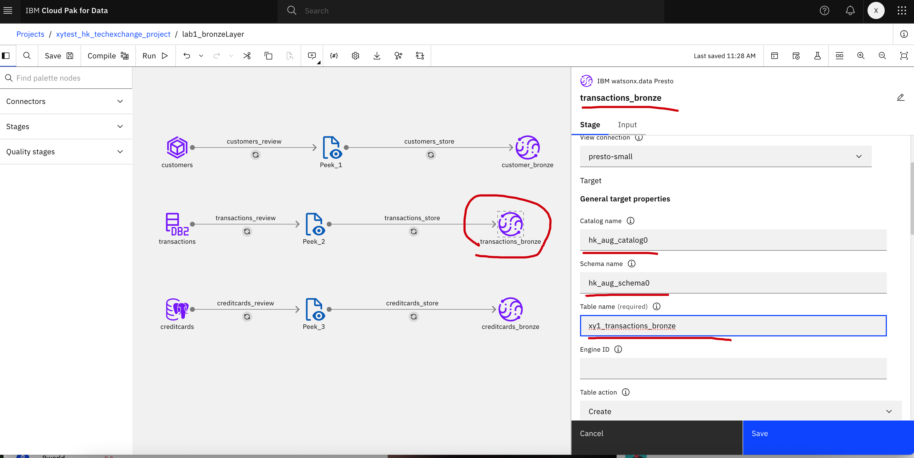
Save and Run, waiting it until Sucess
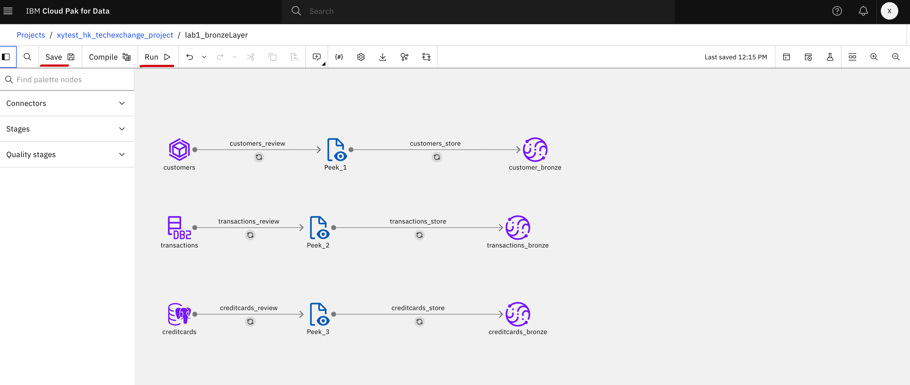
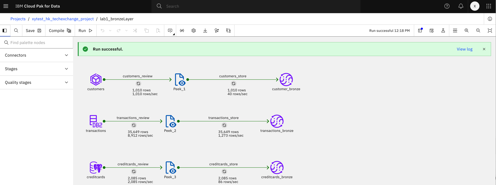
Test: In your watsonx.data UI, go to "Query Workspace"-->Catalog-->Schema-->Table-->Generate Select-->Run
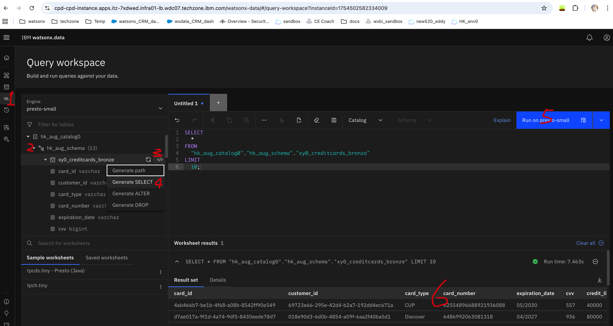
You can do the same test for the rest two tables
Go back to project and click the "lab2_bronzeLayer" flow 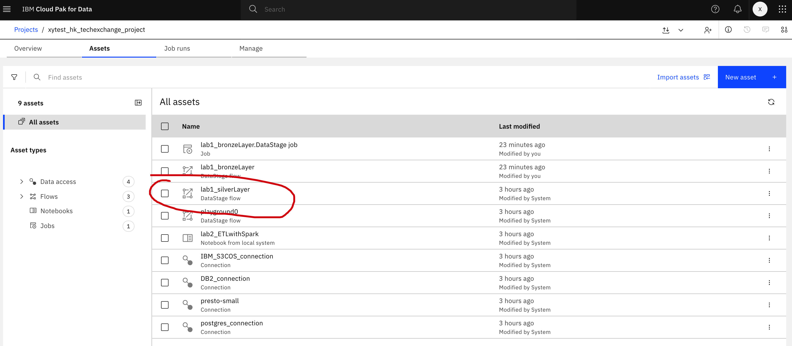
This step will read from 3 bronze tables we just created and:
For 3 sources, make sure the catalog, schema and table align with what you created in the bronze layer.
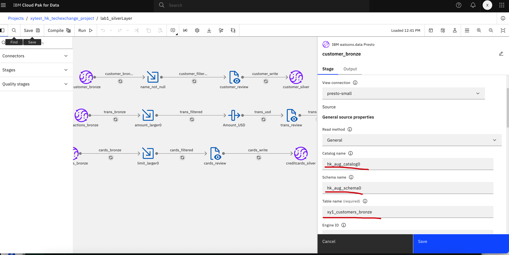
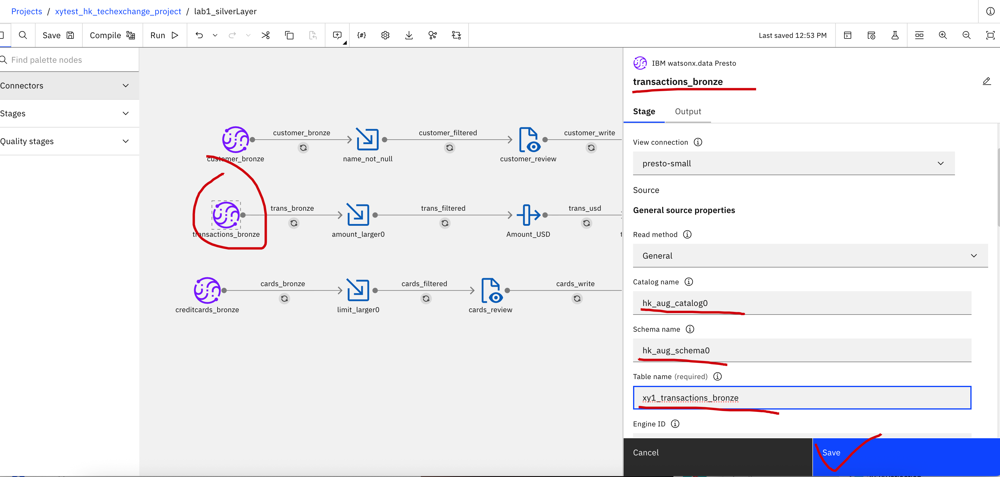
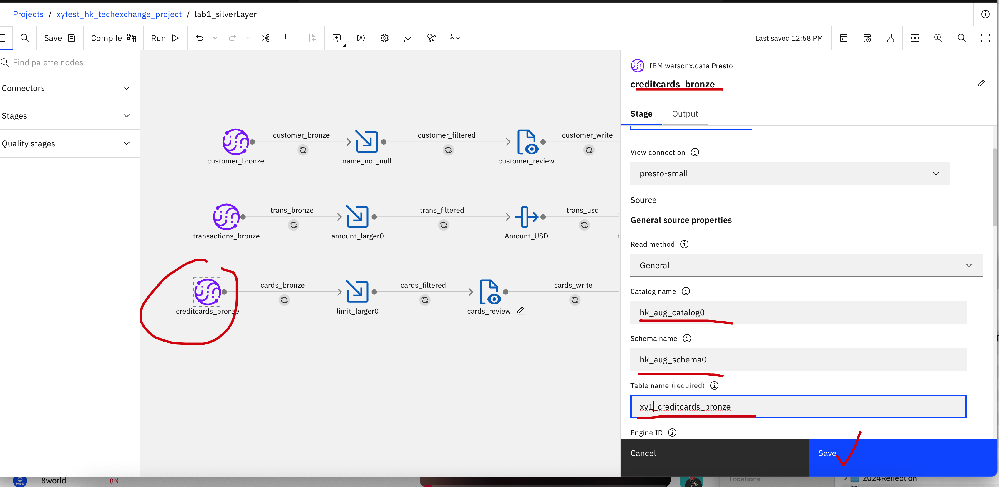
For 3 targets:
Modify the catalog, shcema and table (taking customers for example)
Catalog: should be "hk_aug_catalog0", change to this if it is not
Shchema: should be "hk_aug_schema0", change to this if it is not
!!Table: Change to [yourName]_customers_silver
Click Save
Do the same for the rest two: transactions and credit cards
!!Transactions table: Change to [yourName]_transactions_silver
!!Credit cards table: Change to [yourName]_creditcards_silver
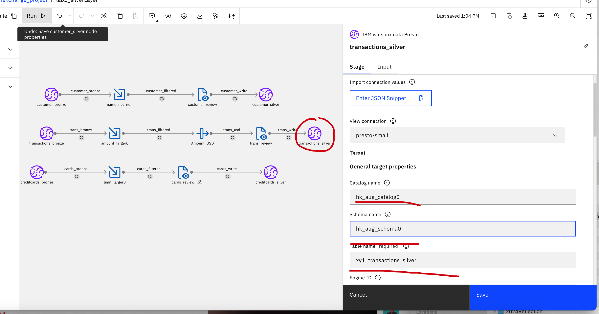
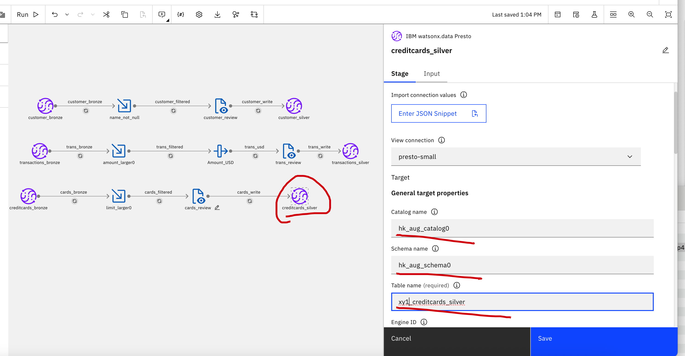
Save and Run, waiting it until Sucess
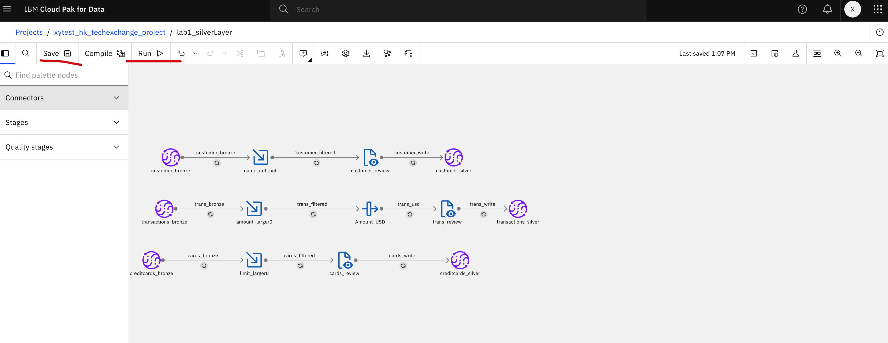
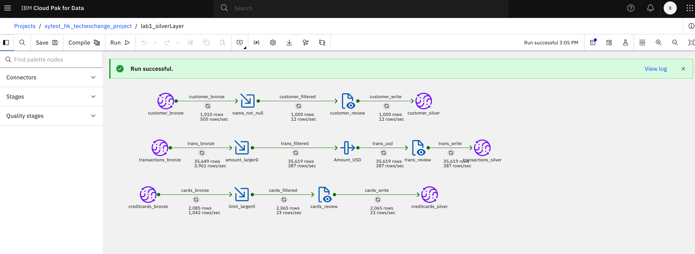
Test: In your watsonx.data UI, go to "Query Workspace"-->Catalog-->Schema-->Table-->Generate Select-->Run
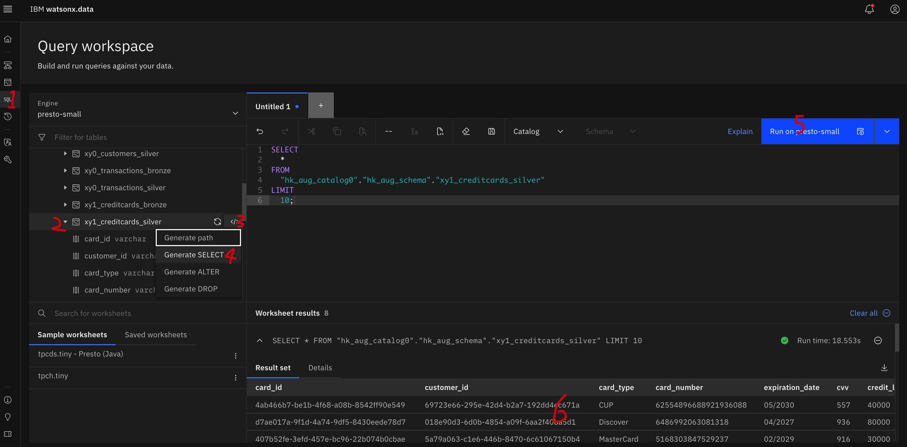
You can do the same test for the rest two silver tables